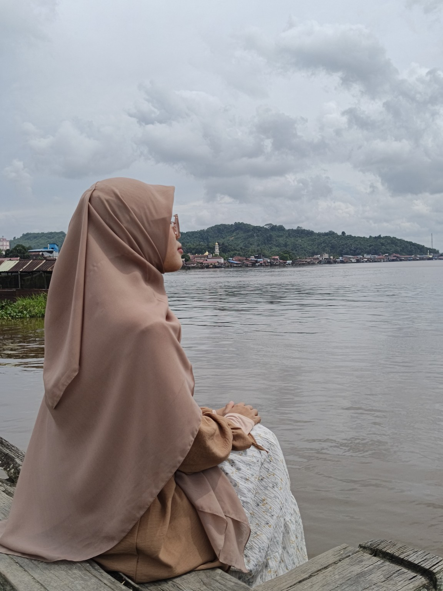
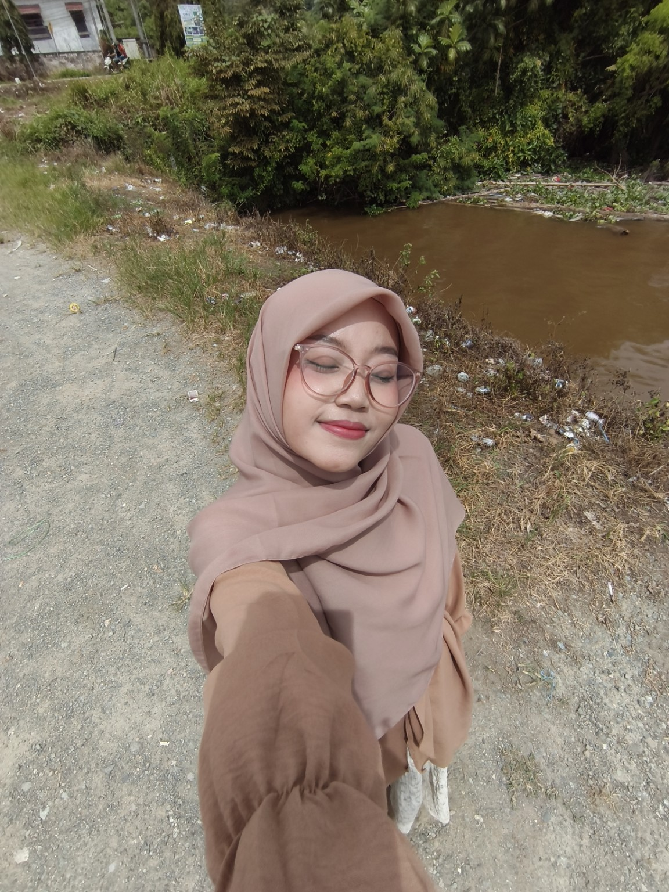
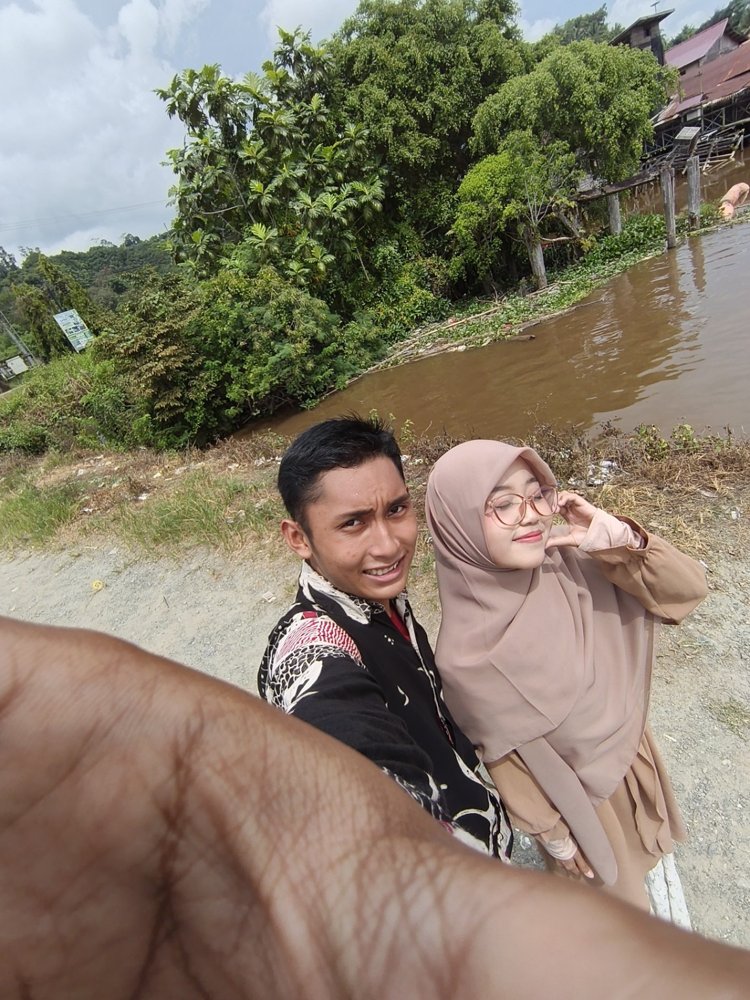
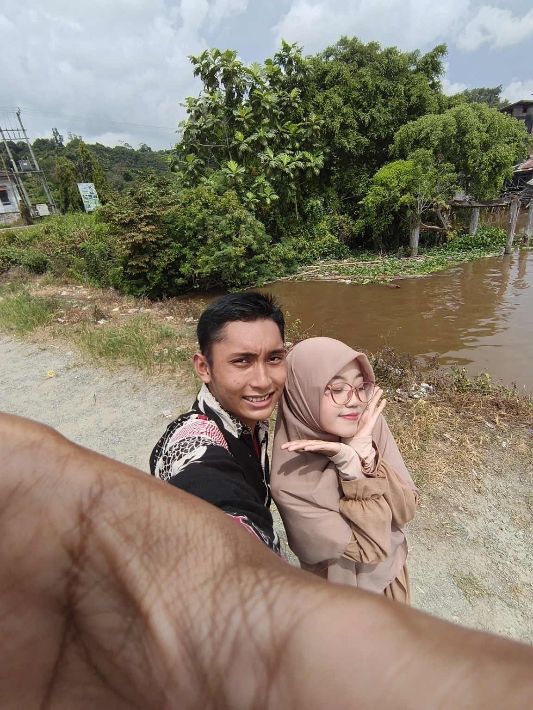
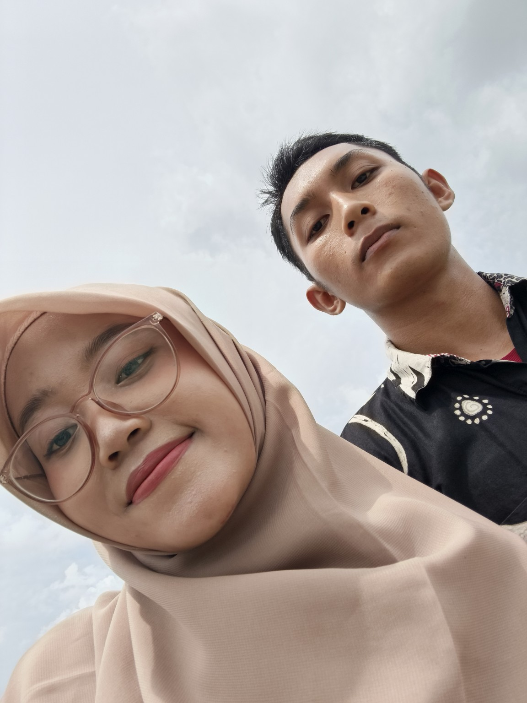

🤍 Celamattt Ulang Tahunn Yaa Dedeee 🥹🤍✨
haaiii celamatttttt ulang tahunn yaa dedeee 🥹🤍✨
akhirnya hari yang spesial ini dateng juga yaa. hari dimana seseorang yang paling mas sayang di dunia lahir dan bikin hidup mas jadi jauh lebih indah dari sebelumnya 🥹🤍
makasii yaa dedee udah hadir di hidup mas. makasii udah jadi alasan mas buat senyum setiap hari. makasii udah nemenin mas di hari-hari yang seru, yang bahagia, bahkan di hari-hari yang kadang berat dan bikin capek 🥹🤍
jujur ajaa, sejak kenal adek, banyak hal berubah di hidup mas. hal-hal kecil jadi terasa spesial, hari-hari biasa jadi terasa lebih menyenangkan, dan masa depan terasa lebih indah karena ada adek di dalamnya 🥹✨
mas selalu bersyukur karena dipertemukan sama perempuan sebaik, secantik, sesabar, dan sehangat adek. mungkin mas ga selalu sempurna, mungkin mas masih banyak kurangnya, tapi satu hal yang selalu pasti, rasa sayang mas ke adek selalu tulus dan ga pernah berkurang 🥹🤍
di umur yang baru ini, mas doa yang terbaik buat dedee. semoga semua yang adek semogakan bisa terwujud satu per satu. semoga kesehatan, kebahagiaan, rezeki, dan segala hal baik selalu dateng ke hidup adek. semoga langkah adek selalu dipermudah, dan semoga hati adek selalu dijaga agar tetap bahagia 🥹🌷✨
kalau nanti ada hari yang berat, jangan dipikul sendirian yaa. mas mau jadi tempat adek cerita, tempat adek pulang, tempat adek bersandar ketika dunia lagi ga baik-baik aja 🥹🤍
terima kasih yaa dedeee karena udah jadi bagian terindah dalam hidup mas. terima kasih karena selalu ada. terima kasih karena udah sayang sama mas sampai hari ini 🥹🤍
mas ga tau apa yang bakal terjadi di masa depan, tapi yang mas tau, selama masih dikasih kesempatan, mas pengen terus ada di samping adek, nemenin adek, bikin adek ketawa, dan merayakan banyak ulang tahun lainnya bareng adek 🥹🤍✨
i love you more than yesterday, but less than tomorrow 🥹🤍
sekali lagiiii...
celamattttt ulang tahunn yaa adrkkuu, dedekkuu, cintakuuu, sayangkuu, perempuan favorit mas di duniaaa 🥹🎂🤍✨🌷
semoga hari ini penuh kebahagiaan, penuh senyum, penuh cinta, dan penuh hal-hal baik yang adek pantas dapetin 🥹🤍
love youuuu alwaysss 🤍🥹✨
— Mas 🤍